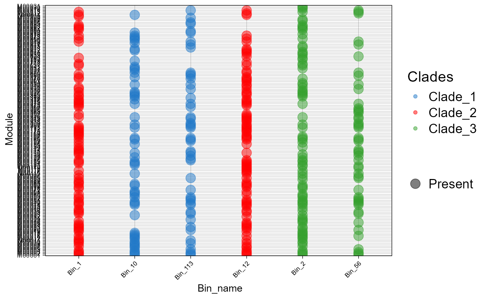

Creates a bubble plot of KEGG or InterProScan data.
plot_bubble(tibble_ko, x_axis, y_axis, analysis=c("KEGG","INTERPRO"), data_experiment=NULL, calc=NULL, color_character=NULL, order_bins=NULL, order_metabolism=NULL, color_pallet=NULL, range_size=NULL, x_labs=TRUE, y_labs=TRUE, text_x=NULL, text_y=NULL)
| tibble_ko | a tibble object, created with the mapping_ko or get_subset_* functions. |
|---|---|
| x_axis | a string, a column name of the metabolism table. It determined the x axis label. |
| y_axis | a string, a column name of the metabolism table. It determined the y axis label. |
| analysis | a character indicating if your input data are from KEGG or INTERPRO. |
| data_experiment | optional. a data frame object containing metadata information. |
| calc | a character indicating with type of calc should be done to plot the results. Valid values are "Abundance", "Binary", "Percentage", and "None". If you chose none you are expected to use a tibble table obtained from calc_binary or calc_percentage. |
| color_character | optional. a string column name of the metadata or metabolism object, used for color. |
| order_bins | optional. a character vector indicating the bin order. |
| order_metabolism | optional. a character vector indicating metabolism order. |
| color_pallet | optional. a character vector of colors to use. |
| range_size | optional. a numeric vector indicating the range size of the dots. |
| x_labs | optional. If FALSE it will set the x lab to NULL. |
| y_labs | optional. If FALSE it will set the y lab to NULL. |
| text_x | optional. A numeric vector indicating the size of the x text letters. |
| text_y | optional. A numeric vector indicating the size of the y text letters. |
This function is part of a package used for the analysis of bins metabolism.
plot_bubble(tibble_ko=ko_bin_mapp, x_axis=Bin_name, y_axis=Module, analysis="KEGG", data_experiment=metadata, calc="Binary", color_character=Clades)#> Warning: Removed 603 rows containing missing values (geom_point).